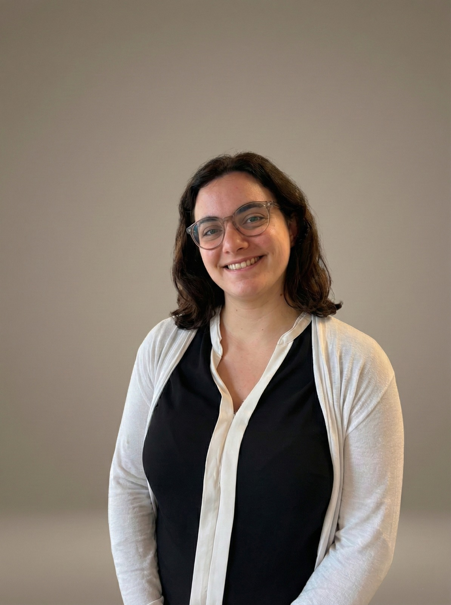

Un percorso dedicato alla cura della persona
Sono una Psicologa Clinica e Tutor dell'Apprendimento. Il mio lavoro nasce da una passione autentica per le persone e dalla convinzione che ognuno, se supportato nel modo giusto, possieda il potenziale per superare i momenti di crisi e costruire il proprio benessere.
Nel mio studio offro uno spazio di ascolto sicuro, empatico e privo di giudizio, dove affrontare insieme le sfide della crescita, le difficoltà scolastiche o i momenti di disagio emotivo.
Laurea Magistrale
Psicologia Clinica — Università di Bergamo
Tutor dell'Apprendimento
Certificazione specialistica
Formazione Continua
Scuola di Psicoterapia Integrata Relazionale